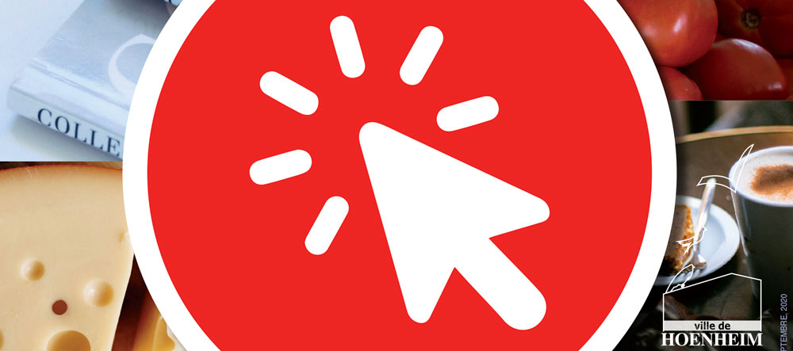

La ville de Hoenheim, l’Eurométropole de Strasbourg, le Gouvernement, la Région Grand-Est, Alsace Active ou Made in Alsace… mettent en oeuvre des solutions d’aide aux commerçants pour continuer à vous servir et travailler malgré les contraintes sanitaires actuelles.

Dans l’attente de la mise en place d’un annuaire des commerçants sur le site internet de la ville, retrouvez ci-dessous vos commerçants de proximité et restaurateurs qui mettent en place des supports numériques d’achat en ligne ou des points de retrait de commandes :
.
Boulangerie au Flocon de sucre
39 rue de la République
03 88 33 31 57
Commande par téléphone possible
Ouvert de 5h45 à 19h du lun. au ven., le sam. de 5h45 à 13h, fermé le dimanche
.
Boulangerie Banette
2 rue du Cimetière
03 88 33 26 53
Ouvert de 6h à 19h du lun. au ven., le sam. de 6h à 13h et le dim. de 7h à 12h
.
Boulangerie Hauck
3 place du Dr Albert Schweitzer
03 88 83 11 00
Ouvert de 7h à 12h30 et de 14h à 19h du lun. au ven., le sam. de 7h à 14h, fermé le dimanche
.
Bureau de tabac de la Mairie
25 rue de la République
03 88 33 74 23
Ouvert du lun. au ven. de 6h30-19h le sam. de 6h30 à 16h et le dim. de 7h30 à 12h
.
Bureau de tabac Ramic Zlata
11 rue de la Ville
03 67 97 68 44
Ouvert aux horaires habituels
Service de règlement de factures
.
Coiffeur Au peigne fin
32 rue de la République
03 88 33 14 11
Drive ouvert à la vente de produits capillaires, commande par téléphone
.
Coiffeur LK Studio
1 rue de la Fontaine
03 88 33 04 94
Drive ouvert à la vente de produits capillaires, commande par téléphone
.
Fleuriste L’Agapanthe
31 rue de la République
03 88 83 40 02
Commande par téléphone ou sur le site internet, retrait en magasin et livraison à domicile possibles
Clic & Connect en cours de mise en place
Site internet
Facebook
.
Fleuriste Aventures Fleuries
06 87 67 52 35
Commande par téléphone ou sur le site internet, retrait en magasin et livraison à domicile possibles
Clic & Connect en cours de mise en place
Site internet
Facebook
.
La Charcut’Hier Pays’Anne
36 rue de la République
03 88 33 01 91
Commande par téléphone ou sur le site internet, retrait en magasin et livraison à domicile possibles
Site internet
Facebook
.
Super U et Drive
13 route de La Wantzenau
03 88 33 44 88
Site internet
Facebook
.
Supermarché Lidl
6-8 rue Anatole France
08 90 16 48 72
Site internet
Facebook
.
Supermarché Carrefour Market
5 place du Dr Albert Schweitzer
03 88 95 26 65
Drive ouvert à la vente de produits capillaires, commande par téléphone
Vous êtes commerçant, artisan, restaurateur, producteur…
sur le ban de Hoenheim et vous proposez vos services de commande par téléphone ou internet et dans le respect des mesures barrières.
Vous n’avez pas encore été contactés par nos services, adressez-nous vos coordonnée à communication@ville-hoenheim.fr en précisant le lien vers votre site internet et votre page Facebook ainsi que le descriptif de vos initiatives en matière de service de proximité.
CONTACTEZ-NOUS…
A très bientôt !

Entrepreneurs à la tête d’une entreprise de de moins de 50 salariés dont le siège se trouve dans le périmètre de l’Eurométropole de Strasbourg, rejoignez le dispositif et bénéficiez gratuitement d’un diagnostic numérique l’EMS.
Plus d’informations sur https://www.strasbourg.eu/beecome
{kind=link}
Face à l’épidémie du Coronavirus COVID-19, la Ville et l’Eurométropole de Strasbourg ont mis en place des mesures de soutien immédiates aux entreprises.
- L’actualité sur le site de l’Eurométropole :
- Les demandeurs peuvent déposer leur dossier sur le site régional qui précise notamment les critères pour avoir droit à l’avance remboursable.
https://www.grandest.fr/vos-aides-regionales/fonds-resistance/
Pour les demandes des entreprises :
Instructeur : Frédéric SEMPE – frederic.sempe@strasbourg.eu – 06 72 85 63 61
Pour les demandes des associations :
Opérateur : ALSACE ACTIVE
Instructeurs : Bénédicte ANTOINE – 07 72 45 10 51 – bantoine@alsaceactive.fr
François BOULAT – fboulat@alsaceactive.fr – 06 40 13 92 32

Des offres préférentielles ont été mises en place pour permettre aux commerces soumis à de fortes restrictions de poursuivre une activité avec des solutions:
- pour développer un site marchand ;
- de paiement ;
- de logistique et de livraison ;
- des places de marché qui permettent aux clients de rechercher un commerçant localement.
COVID-19 : Aide aux commerçants de la Direction de la coordination des politiques publiques et de l’appui territorial
Plus d’informations sur le site internet du Gouvernement
Message commun de Bruno Le Maire, Olivier Dussopt et Alain Griset disponible ici.

.
L’équipe Made in Alsace a mis en place une nouvelle rubrique « Achat Local » sur son site internet ainsi qu’une application pour smartphone.
Ces supports de communication sont mis gracieusement à disposition de Made in Alsace, il suffit pour cela de fournir à contact@madeinalsace.com :
- 10 photos de vos produits ;
- 1 photo d’accueil ;
- 1 photo en mode portrait (vertical) pour la carte de l’application. app.madeinalsace.com ;
- le lien vers votre boutique web ;
- le lien vers votre site internet ;
- un texte de présentation que nous optimiserons pour le référencement.
Des exemples sont d’ores et déjà en place dans la rubrique « Achat Local », sur le site www.madeinalsace.com